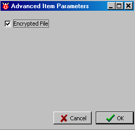
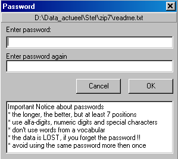

January 2005
File Encryption
Introduction
After being confronted several times with "auto-removed" passwords from protected M$ files, I decided it's time to get a better protection. As I'm not a crypto-expert, I needed an easy and complete solution. At first sight, password protected files in PKZIP or WINZIP format seems to be an obvious choice. But searching the internet, revealed that this encryption is rather weak (can be cracked within a few hours with 100% certainty). Searching the web, and checking the first 20 hits, the following weak encryption technics were found:
Instantaneously to crack are: M$-office / PDF.
Easy to crack are (within a few hours at most): PKZIP / WinZIP / ARJ / RAR upto 2.x / Norton Secret Stuff v 1.0 / Crypt-O-Text v. 1.21-1.24 / WinXFiles (up to v. 3.5) / Icon Lock-It / Encrypt-It for Windows / UnBreakable Encryption (UBE) 98 / File Locker 1.11 / Package for the Web v. 1.x-3.x / MasterKey.
Another search on the web, revealed the freeware package 7-zip, comparable to PKzip. I couldn't find tools to crack 7-zip (256 AES encryption), and hope to get some answer from an expert on this subject Pavel Semjanov. Unfortunatly he didn't know. But as 7-zip is a relative unknown program, it'll be less attractive to hackers.
JALcc Encryption
So for JALcc I've choosen to implement only the encryption by 7-zip format. Opening an encrypted file, is done in the same manner as a normal file, but before the file is shown, you've to enter a valid password. An encrypted file closes automatically when
JALcc doesn't have a facility to remember passwords.
For the password yields the normal rules:
File-naming
aap_test.txt <--> aap_test_txt.7z
Encrypting a new file
You can set the encryption or decryption of a file in the document list, through right-mouse button menu / edit parameters / advanced:
 
When changing to encrypted file, you've to enter the same password twice (ofcourse you can use the ENTER-key to jump from the first to the second password). Don't use copy and paste, because when you don't know the password, your data is lost !!
Changing the password
Changing the password of an encrypted file, should be done, by first setting the file to decrypted and then again to encrypted. The latter action will ask for a new password.
7-zip options
Is there an Explorer context menu option in this program? (i.e., right click a file, "add to zip file" or similar option)
Yes, but it's not set at install.
To set this up, you must open the 7-Zip file manager, then go to the Tools menu -> Options -> Plugins -> System.